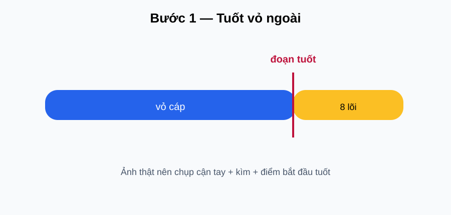

📷 Gợi ý ảnh thật: Ảnh thật nên có: tay đặt dây vào khe tuốt, vị trí bắt đầu tuốt và phần vỏ vừa bóc. chụp cận thao tác tay, dụng cụ và trạng thái “đúng” ở bước này.
1
Tuốt vỏ ngoài
Em làm: Đặt dây vào phần tuốt của kìm/dao theo hướng dẫn của dụng cụ. Tạo đoạn dây hở đủ để thao tác, tránh cứa vào các lõi bên trong.
👀 Quan sát: chỉ bóc lớp vỏ ngoài; các lõi bên trong vẫn nguyên vẹn.
✓ Vỏ ngoài được bóc sạch, 8 lõi không bị đứt hoặc trầy đáng kể.
🔧 Nếu sai: cắt bỏ đoạn lỗi và làm lại; không cố sử dụng lõi đã bị cứa.